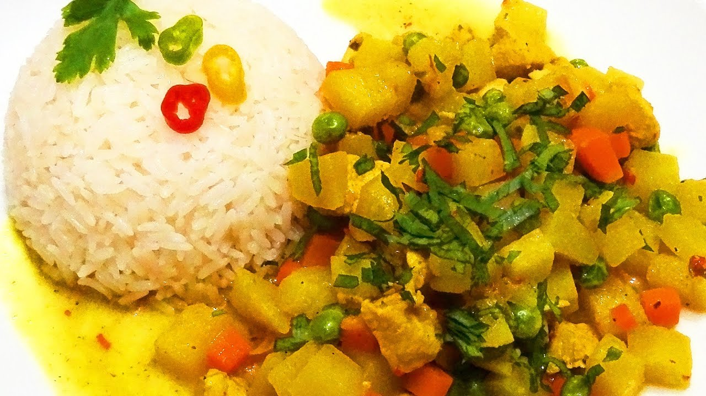

Cau Cau de Pollo
Ingredientes
- 1 pechuga de pollo cortada en cubos
- 3 papas blancas en cubos
- 1 zanahoria en cubos
- ½ taza de arvejas
- 1 cebolla picada
- 2 dientes de ajo picados
- 2 cdas de ají amarillo molido
- 1 cdta de palillo (cúrcuma)
- 1 cdta de comino
- Sal y pimienta al gusto
- 1 rama de hierbabuena
- Hierbabuena picada
- Caldo de pollo
- Aceite vegetal
- Arroz blanco de acompañamiento
¡A PREPARAR!
1. Preparar el aderezo
- En una olla con un poco de aceite, sofríe la cebolla y el ajo hasta que estén dorados.
- Agrega el ají amarillo molido, el comino y el palillo. Cocina por 2 minutos removiendo.
2. Cocinar el pollo
- Añade el pollo en cubos y saltéalo hasta que cambie de color.
3. Agregar los vegetales
- Incorpora las papas, zanahoria, arvejas y la rama de hierbabuena.
- Vierte caldo de pollo hasta cubrir todo. Cocina a fuego medio hasta que las papas estén tiernas (15-20 minutos).
4. Finalizar y servir
- Retira la rama de hierbabuena y agrega la hierbabuena picada al final.
- Ajusta la sal y pimienta.
- Sirve el Cau Cau caliente con arroz blanco.